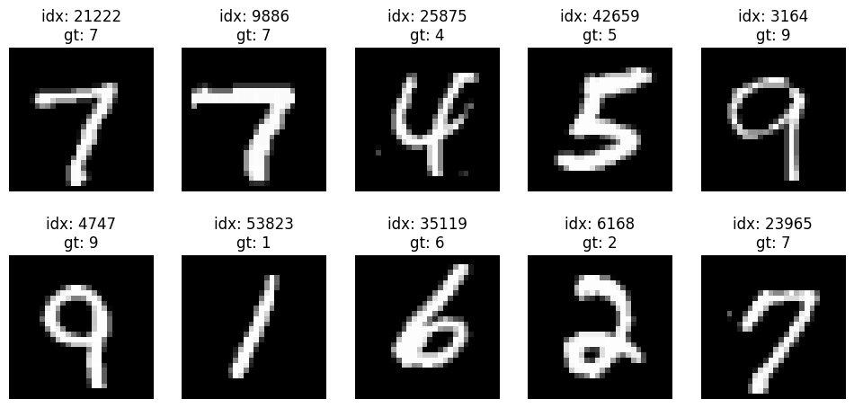
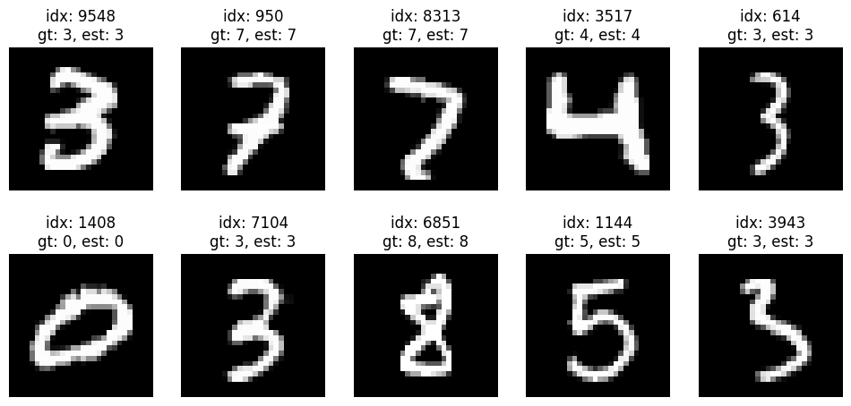
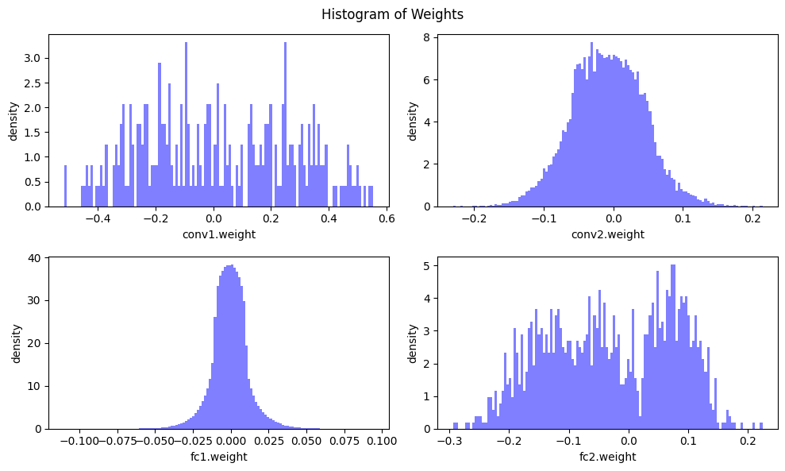
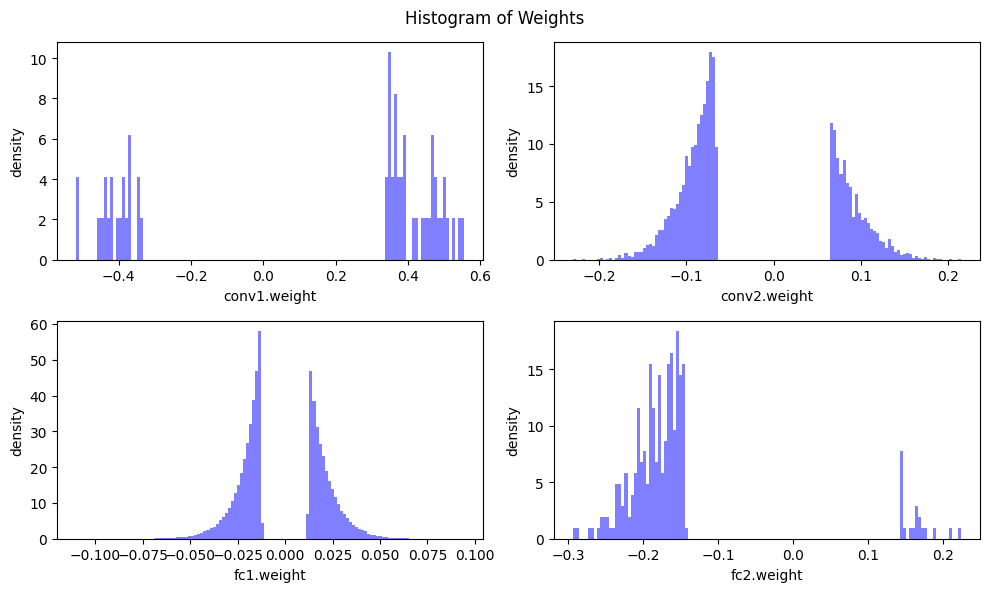
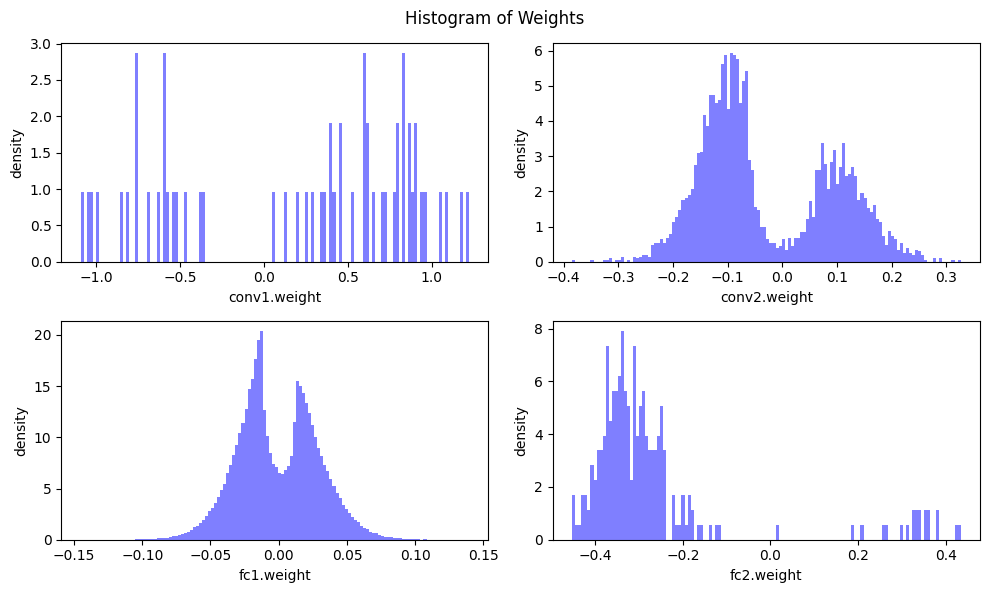

Model Pruning Demo using MNIST and a toy CNN model#
Some intro…
Environment setup#
We first install fundemental packages and download the MNIST dataset and a pretrained model.
!python -m pip install torchprofile matplotlib tqdm > /dev/null
import copy
import math
import numpy
import random
import time
import torch
import torchprofile
import torchvision
from matplotlib import pyplot as plt
from tqdm.auto import tqdm
random.seed(7)
numpy.random.seed(7)
torch.manual_seed(7)
<torch._C.Generator at 0x7f1e5be9b5b0>
Dataset#
We directly use MNIST in torchvision.
trMNIST = torchvision.datasets.MNIST(root='./data/train', train=True, download=True, transform=torchvision.transforms.ToTensor())
vaMNIST = torchvision.datasets.MNIST(root='./data/valid', train=False, download=True, transform=torchvision.transforms.ToTensor())
print('# of img for training:', len(trMNIST))
print('# of img for validation:', len(vaMNIST))
# of img for training: 60000
# of img for validation: 10000
nPlot = 10
idx = random.sample(range(len(trMNIST)), nPlot)
plt.figure(figsize=(12, 5.5))
for i in range(nPlot):
plt.subplot(2, 5, i+1)
plt.imshow(trMNIST[idx[i]][0].permute(1, 2, 0), cmap='gray')
plt.title(f'idx: {idx[i]:d}\ngt: {trMNIST[idx[i]][1]:d}')
plt.axis('off')

Create data loaders for training and validation sets.
trLoader = torch.utils.data.DataLoader(trMNIST, batch_size=256, shuffle=True, pin_memory=True)
vaLoader = torch.utils.data.DataLoader(vaMNIST, batch_size=1024, shuffle=False, pin_memory=True)
Define fundamental functions#
def Train(
model: torch.nn.Module,
dataloader: torch.utils.data.DataLoader,
criterion: torch.nn.Module,
optimizer: torch.optim.Optimizer,
callbacks = None) -> None:
model.train()
for inputs, targets in tqdm(dataloader, desc='train', leave=False):
# Move the data from CPU to GPU
inputs = inputs.cuda()
targets = targets.cuda()
# Reset the gradients (from the last iteration)
optimizer.zero_grad()
# Forward inference
outputs = model(inputs)
loss = criterion(outputs, targets)
# Backward propagation
loss.backward()
# Update optimizer
optimizer.step()
if callbacks is not None:
for callback in callbacks:
callback()
@torch.inference_mode()
def Valid(
model: torch.nn.Module,
dataloader: torch.utils.data.DataLoader,
verbose=True) -> float:
model.eval()
num_samples = 0
num_correct = 0
with torch.no_grad():
for inputs, targets in tqdm(dataloader, desc="eval", leave=False, disable=not verbose):
# Move the data from CPU to GPU
inputs = inputs.cuda()
argets = targets.cuda()
# Inference
outputs = model(inputs)
# Convert logits to class indices
outputs = outputs.argmax(dim=1)
# Update metrics
num_samples += targets.size(0)
num_correct += (outputs.cpu() == targets).sum()
return (num_correct / num_samples * 100).item()
Some helper functions…
def GetModelMACs(model, inputs) -> int:
return torchprofile.profile_macs(model, inputs)
def GetSparsity(tensor: torch.Tensor) -> float:
"""
calculate the sparsity of the given tensor
sparsity = #zeros / #elements = 1 - #nonzeros / #elements
"""
return 1 - float(tensor.count_nonzero()) / tensor.numel()
def GetModelSparsity(model: torch.nn.Module) -> float:
"""
calculate the sparsity of the given model
sparsity = #zeros / #elements = 1 - #nonzeros / #elements
"""
num_nonzeros, num_elements = 0, 0
for param in model.parameters():
num_nonzeros += param.count_nonzero()
num_elements += param.numel()
return 1 - float(num_nonzeros) / num_elements
def GetNParam(model: torch.nn.Module, count_nonzero_only=False) -> int:
"""
calculate the total number of parameters of model
:param count_nonzero_only: only count nonzero weights
"""
num_counted_elements = 0
for param in model.parameters():
if count_nonzero_only:
num_counted_elements += param.count_nonzero()
else:
num_counted_elements += param.numel()
return num_counted_elements
def GetModelSize(model: torch.nn.Module, data_width=32, count_nonzero_only=False) -> int:
"""
calculate the model size in bits
:param data_width: #bits per element
:param count_nonzero_only: only count nonzero weights
"""
return GetNParam(model, count_nonzero_only) * data_width
Byte = 8
KiB = 1024 * Byte
MiB = 1024 * KiB
GiB = 1024 * MiB
Define neural network#
A toy CNN network.
class Net(torch.nn.Module):
def __init__(self):
super(Net, self).__init__()
self.conv1 = torch.nn.Conv2d(1, 32, 3, 1) # 1 x 32 x 3 x 3 = 288 parameters
self.conv2 = torch.nn.Conv2d(32, 64, 3, 1) # 32 x 64 x 3 x 3=18,432 paramters
self.dropout1 = torch.nn.Dropout(0.25)
self.dropout2 = torch.nn.Dropout(0.5)
self.fc1 = torch.nn.Linear(9216, 128) # 9216 x 128 = 1,179,648 parameters
self.fc2 = torch.nn.Linear(128, 10) # 128 x 10 = 1,280 parameters
def forward(self, x):
x = self.conv1(x)
x = torch.nn.functional.relu(x)
x = self.conv2(x)
x = torch.nn.functional.relu(x)
x = torch.nn.functional.max_pool2d(x, 2)
x = self.dropout1(x)
x = torch.flatten(x, 1)
x = self.fc1(x)
x = torch.nn.functional.relu(x)
x = self.dropout2(x)
x = self.fc2(x)
output = torch.nn.functional.log_softmax(x, dim=1)
return output
model = Net().cuda()
Train the CNN model on MNIST#
lr = 1.0
lr_step_gamma = 0.7
num_epochs = 5
optimizer = torch.optim.Adadelta(model.parameters(), lr=lr)
criterion = torch.nn.functional.nll_loss
scheduler = torch.optim.lr_scheduler.StepLR(optimizer, step_size=1, gamma=lr_step_gamma)
best_accuracy = 0
best_checkpoint = dict()
for epoch in range(num_epochs):
Train(model, trLoader, criterion, optimizer)
accuracy = Valid(model, vaLoader)
scheduler.step()
is_best = accuracy > best_accuracy
if is_best:
best_checkpoint['state_dict'] = copy.deepcopy(model.state_dict())
best_accuracy = accuracy
print(f'Epoch {epoch+1:>2d} Accuracy {accuracy:.2f}% / Best Accuracy: {best_accuracy:.2f}%')
print(f"=> loading best checkpoint")
model.load_state_dict(best_checkpoint['state_dict'])
Epoch 1 Accuracy 97.80% / Best Accuracy: 97.80%
Epoch 2 Accuracy 98.59% / Best Accuracy: 98.59%
Epoch 3 Accuracy 98.72% / Best Accuracy: 98.72%
Epoch 4 Accuracy 98.88% / Best Accuracy: 98.88%
Epoch 5 Accuracy 98.92% / Best Accuracy: 98.92%
=> loading best checkpoint
<All keys matched successfully>
recover_model = lambda: model.load_state_dict(best_checkpoint['state_dict'])
Evaluate the trained dense model#
denseNNAcc = Valid(model, vaLoader)
denseNNSize = GetModelSize(model)
denseNNMACs = GetModelMACs(model, torch.randn(1, 1, 28, 28).cuda())
denseNNSpar = GetModelSparsity(model)
print(f"Dense model accuracy: {denseNNAcc:.2f}%")
print(f" size: {denseNNSize/MiB:.2f} MiB")
Dense model accuracy: 98.92%
size: 4.58 MiB
def InferenceOneImg(model, img):
res = model(img[None, :, :, :].cuda()).argmax(dim=1)
return int(res.cpu())
nPlot = 10
idx = random.sample(range(len(vaMNIST)), nPlot)
plt.figure(figsize=(12, 5.5))
for i in range(nPlot):
plt.subplot(2, 5, i+1)
plt.imshow(vaMNIST[idx[i]][0].permute(1, 2, 0), cmap='gray')
plt.title(f'idx: {idx[i]:d}\ngt: {vaMNIST[idx[i]][1]:d}, est: {InferenceOneImg(model, vaMNIST[idx[i]][0]):d}')
plt.axis('off')

Analysis on the NN weights#
def plot_weight_distribution(model, bins=128, count_nonzero_only=False):
fig, axes = plt.subplots(2,2, figsize=(10, 6))
axes = axes.ravel()
plot_index = 0
for name, param in model.named_parameters():
if param.dim() > 1:
ax = axes[plot_index]
if count_nonzero_only:
param_cpu = param.detach().view(-1).cpu()
param_cpu = param_cpu[param_cpu != 0].view(-1)
ax.hist(param_cpu, bins=bins, density=True,
color = 'blue', alpha = 0.5)
else:
ax.hist(param.detach().view(-1).cpu(), bins=bins, density=True,
color = 'blue', alpha = 0.5)
ax.set_xlabel(name)
ax.set_ylabel('density')
plot_index += 1
fig.suptitle('Histogram of Weights')
fig.tight_layout()
fig.subplots_adjust(top=0.925)
plt.show()
plot_weight_distribution(model)

Pruning#
def fine_grained_prune(tensor: torch.Tensor, sparsity : float) -> torch.Tensor:
"""
magnitude-based pruning for single tensor
:param tensor: torch.(cuda.)Tensor, weight of conv/fc layer
:param sparsity: float, pruning sparsity
sparsity = #zeros / #elements = 1 - #nonzeros / #elements
:return:
torch.(cuda.)Tensor, mask for zeros
"""
sparsity = min(max(0.0, sparsity), 1.0)
if sparsity == 1.0:
tensor.zero_()
return torch.zeros_like(tensor)
elif sparsity == 0.0:
return torch.ones_like(tensor)
num_elements = tensor.numel()
num_zeros = round(num_elements * sparsity)
importance = torch.abs(tensor)
threshold = torch.kthvalue(importance.flatten(), num_zeros)[0]
mask = importance > threshold
tensor.mul_(mask)
return mask
class FineGrainedPruner:
def __init__(self, model, sparsity_dict):
self.masks = FineGrainedPruner.prune(model, sparsity)
@torch.no_grad()
def apply(self, model):
for name, param in model.named_parameters():
if name in self.masks:
param *= self.masks[name]
@staticmethod
@torch.no_grad()
def prune(model, sparsity):
masks = dict()
for name, param in model.named_parameters():
if param.dim() > 1: # we only prune conv and fc weights
masks[name] = fine_grained_prune(param, sparsity)
return masks
sparsity = 0.8
recover_model()
pruner = FineGrainedPruner(model, sparsity)
pruner.apply(model)
plot_weight_distribution(model, count_nonzero_only=True)

Evaluate the pruned model#
pruned, sparse, not finetuned
sparseNNAcc = Valid(model, vaLoader)
sparseNNSize = GetModelSize(model, count_nonzero_only=True)
print(f"{sparsity*100}% sparse NN accuracy: {sparseNNAcc:.2f}%\t{denseNNAcc-sparseNNAcc:.2f}% drop...")
print(f" size: {sparseNNSize/MiB:.2f} MiB\t{denseNNSize/sparseNNSize:.2f}X smaller than the dense NN")
80.0% sparse NN accuracy: 52.77% 46.15% drop...
size: 0.92 MiB 5.00X smaller than the dense NN
Finetuning the pruned model for accuracy recovery#
finetune the pruned model and keep the model sparsity
num_finetune_epochs = 3
optimizer = torch.optim.SGD(model.parameters(), lr=0.1, momentum=0.9, weight_decay=1e-4)
scheduler = torch.optim.lr_scheduler.CosineAnnealingLR(optimizer, num_finetune_epochs)
best_sparse_checkpoint = dict()
best_sparse_accuracy = 0
print(f'Finetuning Fine-grained Pruned Sparse Model')
for epoch in range(num_finetune_epochs):
# apply the pruning mask at the end of each train iteration
# to keep the model sparse during the training
Train(model, trLoader, criterion, optimizer, callbacks=[lambda: pruner.apply(model)])
accuracy = Valid(model, vaLoader)
scheduler.step()
is_best = accuracy > best_sparse_accuracy
if is_best:
best_sparse_checkpoint['state_dict'] = copy.deepcopy(model.state_dict())
best_sparse_accuracy = accuracy
print(f'Epoch {epoch+1} Sparse Accuracy {accuracy:.2f}% / Best Sparse Accuracy: {best_sparse_accuracy:.2f}%')
Finetuning Fine-grained Pruned Sparse Model
Epoch 1 Sparse Accuracy 98.53% / Best Sparse Accuracy: 98.53%
Epoch 2 Sparse Accuracy 98.77% / Best Sparse Accuracy: 98.77%
Epoch 3 Sparse Accuracy 98.89% / Best Sparse Accuracy: 98.89%
plot_weight_distribution(model, count_nonzero_only=True)

Evaluate The Finetuned Pruned Model#
model.load_state_dict(best_sparse_checkpoint['state_dict'])
sparseNNAcc = Valid(model, vaLoader)
sparseNNSize = GetModelSize(model, count_nonzero_only=True)
print(f"{sparsity*100}% sparse NN accuracy: {sparseNNAcc:.2f}%\t{denseNNAcc-sparseNNAcc:.2f}% drop...")
print(f" size: {sparseNNSize/MiB:.2f} MiB\t{denseNNSize/sparseNNSize:.2f}X smaller than the dense NN")
80.0% sparse NN accuracy: 98.89% 0.03% drop...
size: 0.92 MiB 5.00X smaller than the dense NN
The accuracy is (mostly) recovered. Better and faster…